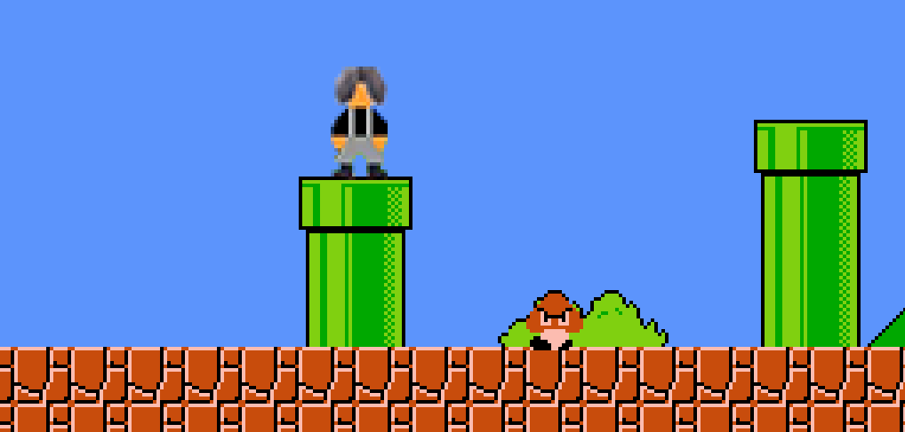
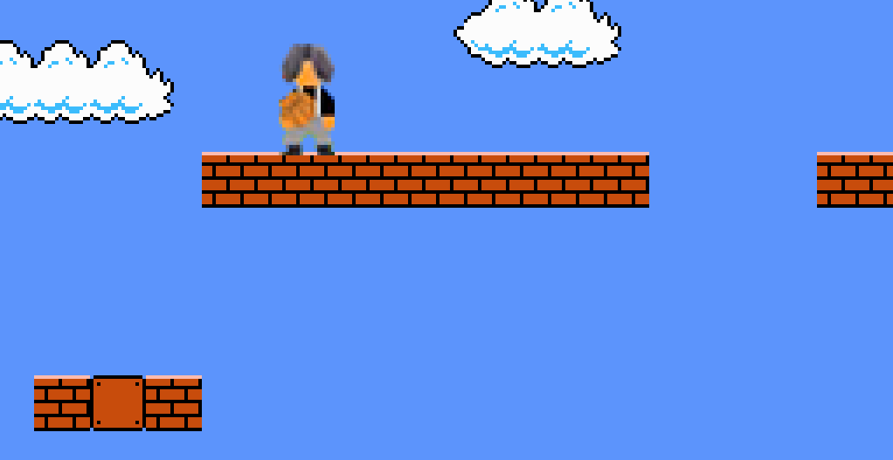
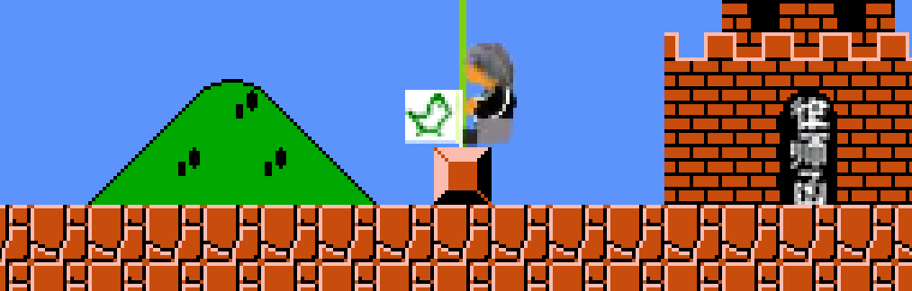

蔡徐坤马里奥



启动游戏
使用帮助
电脑端控制：
←→键控制角色移动，空格键跳，↓键下蹲/钻管道，shift键发子弹
手机端控制：
左右滑动控制角色移动，A键跳，B键发子弹，下滑钻管道/下蹲
更新日志
1.3.1版本 - 在蔡徐坤状态下，1up音效换成“厉不厉害你坤哥”，掉坑si亡音效换成“你干嘛哈哈哎呦”；
2-2背景音乐换成Deadman 8bit版，作者@托米同学
1.3版本 - 新增第二大关；
修复一些bug
特别说明
感谢@断魂丷云等博主提供原蔡徐坤马里奥试玩视频给我提供贴图素材。
原作者：@春田花花幼稚园优秀毕业生，但是他已经注销了B站账号。
此版本为我还原+扩展的版本。